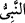
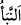
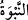

vardır. Allah bağışlayandır, esirgeyendir.
6. Peygamber, müminlere kendi canlarından daha yakındır. Eşleri, onların
analarıdır. Akraba olanlar, Allâh’ın Kitabına göre, (mirasçılık bakımından)
birbirlerine diğer müminlerden ve muhacirlerden daha yakındırlar; ancak,
dostlarınıza uygun bir vasiyet yapmanız müstesnadır. Bunlar Kitap’ta yazılı
bulunmaktadır.
“Ey Peygamber!” “__WORD__ kelimesi, kendisiyle bir bilgi veya zann-ı gâlibin meydana
geldiği pek faydalı haber demek olan “__WORD__ kökündendir. Peygambere “nebî” denilmiştir.
Çünkü o Allah Teâlâ hakkında temiz akılların sükûn bulacağı haberler veren kimsedir.
Yahut “__WORD__ kelimesi, yükseklik mânâsında “__WORD__ kökündendir. Çünkü “Onu üstün bir
makama yücelttik.” (Meryem, 19/57) âyetinin delâlet ettiği gibi peygamberin makamı
diğer insanlardan yüksektir.
Allah Teâlâ: “Ey Adem, Ey Nûh, Ey Mûsâ, Ey Îsâ, Ey Zekeriyyâ, Ey Yahyâ”
buyurduğu gibi Hz. Peygamber (s.a.)’e: “Ey Muhammed” diye ismiyle nidâ ve hitab
etmemiş, O’na şeref vermek için “Ey Peygamber” diye nidâ etmiştir. Bu, Hz.
Peygamber (s.a.)’in âlîcenab oluşuna/şânının yüceliğine delâlet eden; şeref bahşeden
lakaplardandır. O’nun bundan başka daha bir çok isim ve lakapları da vardır. İsim ve
lakaplarının çokluğu, ismin sâhibi olan zâtın şeref ve mevkiinin yüceliğine delâlet eder.
“Muhammed Allâh’ın rasûlüdür/elçisidir.” (el-Feth, 48/29) âyetinde O’nun isminin
açık olarak söylenmesi ise insanlara O’nun Allâh’ın elçisi olduğunu öğretmek,
insanların O’na inanmaları ve O’nu hak îtikadlarına dâhil etmeleri içindir.
Esbâb-ı Nüzûl’de zikredilmiştir ki: Ebû Süfyân, İkrime ve Ebü’l-A‘ver Uhud
savaşından sonra Mekke’den Medîne’ye gelip münâfıklığın merkezinde, yâni Vessâk b.
Übey’in evinde konakladılar. Ertesi gün Allah Rasûlü’nden kendilerine emân vermesini
ve Hz. Peygamber (s.a.) ile konuşmak istediklerini ifâde ettiler. Hz. Peygamber onlara
emân verdi. Bir grup münâfık ile kalkıp Hz. Peygamber (s.a.)’in yanına geldiler ve:
“İlâhlarımızı anmayı bırak ve onların kıyâmet gününde şefaat edeceğini, kendilerine
tapanlara fayda vereceklerini söyle, biz de seni Rabbin ile baş başa bırakalım (sana
karışmayalım).” dediler. Bu söz Hz. Peygamber (a.s.)’a ağır geldi ve mübârek yüzünü
çevirdi. Münâfıklardan Abdullah b. Übeyy, Muaattib b. Kuşeyr ve Cedd b. Kays: “Ey
Allâh’ın Rasûlü! Arapların eşrâfından olan bu zevâtın sözünü dinleyin. Çünkü tam bir
barış ancak böyle sağlanabilir.” dediler. Bu durum Hz. Ömer (r.a.)’ın gayret-i
dîniyyesine dokundu, kâfirleri öldürmek için harekete geçti. Hz. Peygamber (a.s.): “Ey
Ömer, ben onların canına emân verdim, güvenliklerini garanti ettim. Sen anlaşmayı
bozma!” buyurdu. Hz. Ömer (r.a.) onları Mescid’den, hatta Medine’den çıkardı ve
“Allâh’ın lanet ve gazabına uğramış olarak çıkın gidin!” dedi. İşte bunun üzerine bu âyet
nâzil oldu.